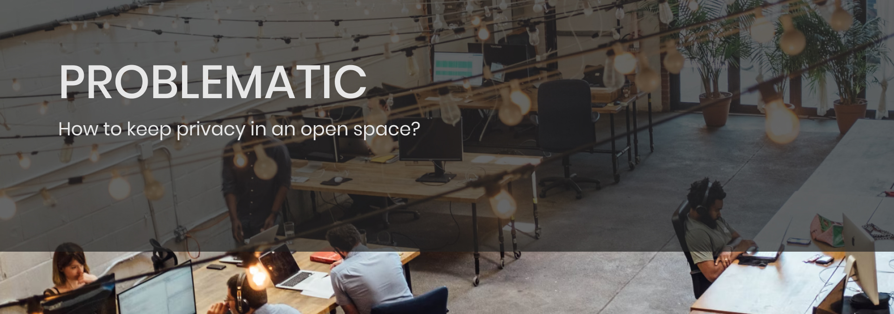
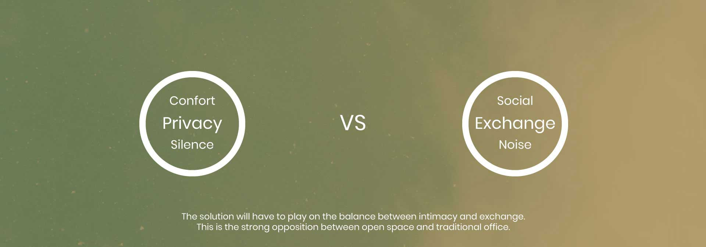
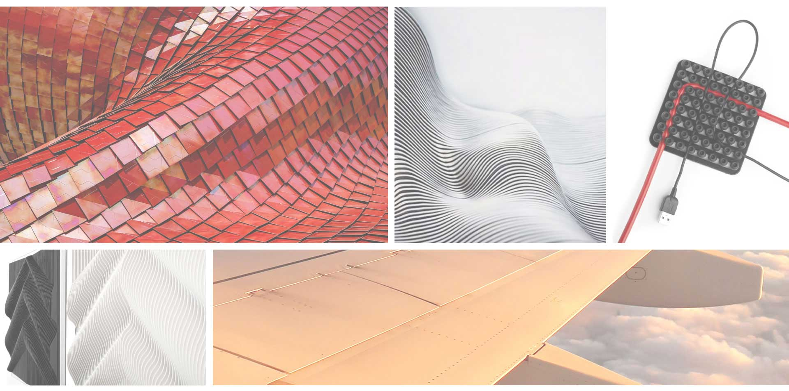
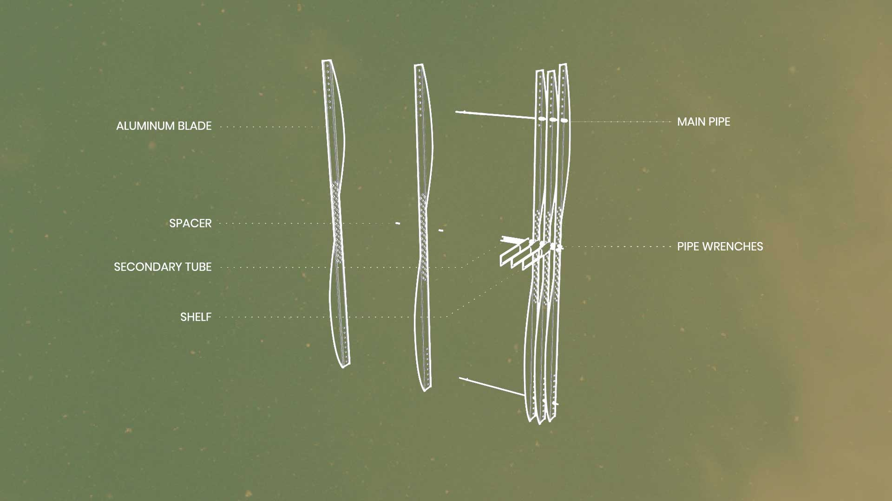
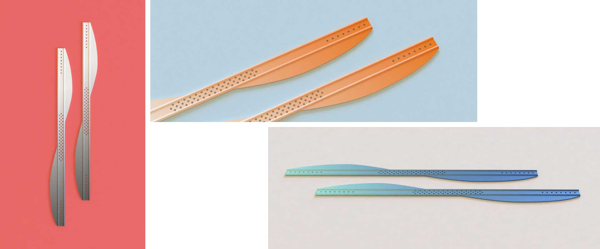
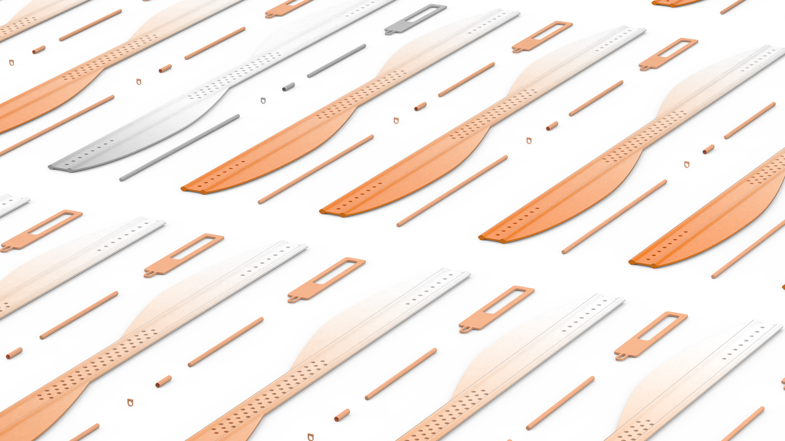
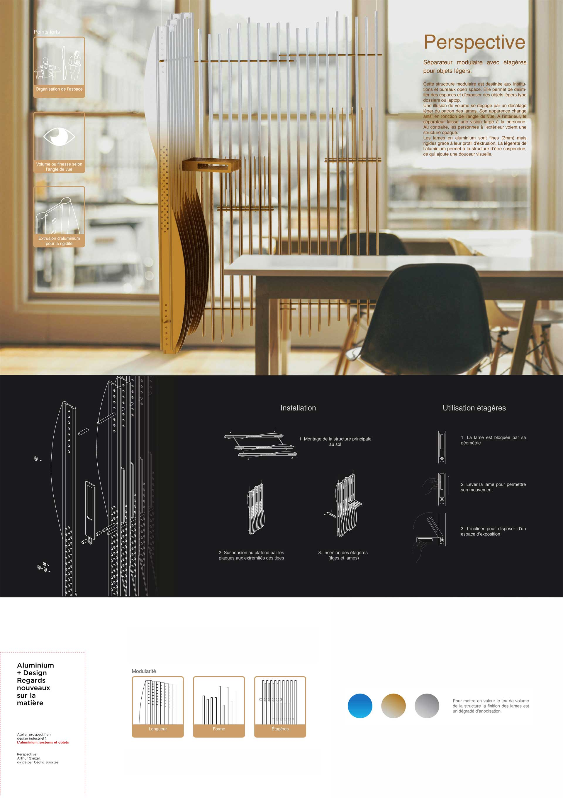

Perspective
Brief
Finding new ways of working and enhancing the value of aluminium as a structural and technical element,
through the design of a modular system allowing the display of objects or various things, or a "screen"
in a commercial or institutional context.
Prospective industrial design workshop within the framework of a partnership between the Université de
Montréal and Aluquebec.
Exhibition: "Aluminium, a new look at matter", February 7 to March 2, 2019 at the Faculté de
l'aménagement of the Université de Montréal.
At first, I imagined that I could meet the organizational needs of an office, but as I thought about it,
my problematic evolved.
Industrial design
- 2018
- 2 months
- University project
- Alu Quebec


Research
My research focused on the properties of aluminum and on structures that could address the problem.
Among other things, aluminum has a good ratio between its mechanical resistance and its weight. To
enhance the material, it is therefore interesting to create a suspended construction.
I also discovered Denis Kaskaro's work on blade rehearsals, himself inspired by José Margulis. This
technique allows an interesting play between 2D and 3D, between opacity and transparency.


Further development of the design made of aluminium slats. The final concept consists of a
succession of slats of relatively high size (1m20 on the final product) but of thin thickness
that allow to separate spaces in a light way. Shorter slats can be folded to the side to
support/expose light objects.

Technical development
The blades are extruded and then laser cut. Aluminum allows for a wide variety of extrusion profiles.

Prototype
For presentation at the exhibition a scale 1 model was made.

Final Product
Modular divider with shelves for light objects. This modular structure is designed for institutions and
open space offices. An illusion of volume is created by slightly shifting the pattern of the slats. The
appearance changes according to the viewing angle.
On the inside, the separator leaves a wide view to the person. On the contrary, people on the
outside see an opaque structure.
The aluminium slats are thin (3mm) but rigid due to their extrusion profile. The lightness of
the aluminium allows the structure to be suspended, which adds visual softness. The structure is
modular in size and modular in number of shelves. It is also possible to choose the offset of
the slats during assembly. 3 anodizing gradations are available. Anodizing gradations are
possible by more or less long application of the shade.


